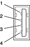

|
PATH |


The Power Mac G4 computer has two external Universal Serial Bus (USB) ports on the back. The USB ports are used for connecting the keyboard and mouse as well as additional I/O devices such as printers, scanners, and low-speed storage devices.
Each USB port is connected to a separate USB root hub, allowing both USB ports to support 12 Mbps devices at the same time with no degradation of their performance. (USB port 2 is shared internally with the USB signals to the ADC monitor.)
For more information about USB on Macintosh computers, please refer to Apple Computer's Mac OS USB DDK API Reference and the other sources listed in "USB Interface".
The USB ports use USB Type A connectors, which have four pins each. Two of the pins are used for power and two for data. Figure 3-1 shows the connector and Table 3-1 shows the signals and pin assignments.
Figure 3-1 USB connector
| Pin | Signal name | Description |
| 1 | VCC | +5 VDC |
| 2 | D– | Data – |
| 3 | D+ | Data + |
| 4 | GND | Ground |
The Power Mac G4 provides power for the USB ports at 5 V and up to 500 mA on each port. The ports share the same power supply; a short circuit on one will disable both ports until the short has been removed.
The USB ports support both low-speed and high-speed data transfers, at 1.5 Mbits per second and 12 Mbits per second, respectively. High-speed operation requires the use of shielded cables.
The Macintosh system software supports all four data transfer types defined in the USB specification.
USB devices can provide a remote wakeup function for the computer. The USB root hub in the computer is set to support remote wakeup whenever a device is attached to the bus. The device wakes the computer by sending a Resume event to the USB root hub. The mouse and keyboard that come with the computer use this method to wake the computer on a key press or mouse click.
This functionality is part of the USB-suspend mode defined in the USB specification. Information about the operation of USB-suspend mode on Macintosh computers is included in the Mac OS USB DDK API Reference, available on the World Wide Web at http://developer.apple.com/documentation/Hardware/DeviceManagers/usb/ usb.html
The Power Mac G4 can boot from a USB storage device that follows the USB Mass Storage Class specification.
Class drivers are software components that are able to communicate with many USB devices of a particular kind. If the appropriate class driver is present, any number of compliant devices can be plugged in and start working immediately without the need to install additional software. The Mac OS for the Power Mac G4 computer includes a class driver that supports devices that meet the USB Mass Storage Class specification.